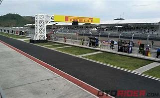
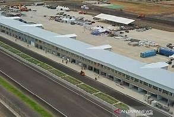
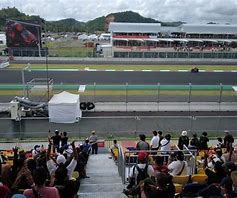
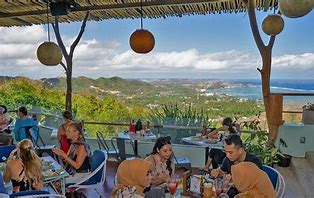
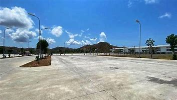
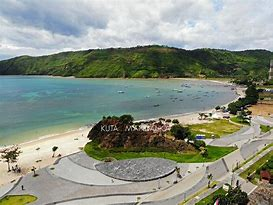
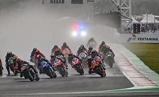

Tentang Mandalika Sirkuit
Mandalika Sirkuit merupakan sirkuit balap motor yang terletak di Lombok, Nusa Tenggara Timur, Indonesia. Dibangun di sekitar pesisir selatan Lombok, membuat sirkuit ini memiliki daya tarik sendiri, pemandangan alam yang spektakuler terpampang nyata sepanjang trek sirkuit ini

Sirkuit Mandalika saat ini sudah di dapuk untuk menjadi salah satu tuan rumah ajang balapan motor kelas dunia seperti MotoGP,
Fasilitas
- Paddock yang Luas 
- Gedung Pit Modren 
- Tribun Dengan Pemandangan Yang Menakjubkan 
- Restoran Dan Kafe 
- Area Parkir Yang Luas 
- Area Camping

Acara
Sirkuit Mandalika akan menjadi tuan rumah dari ajang balap bergengsi dan kegiatan lainya. Beberapa acara yang dijadwalkan termasuk:
- MotoGP
- World Superbike Championship
- Track Days
- Acara Otomotif Lokal
jangan lewatkan kesempatan untuk menyaksikan aksi balap yang seru!
Galeri


Kontak
Hubungi kami untuk informasi lebih lanjut:
- Email:info@sirkuitmandalika.com
- Telpon: +628432156789
- Alamat:jalan mandalika indah NO 1, Lombok, Nusa Tenggara Timur, Indonesia